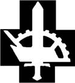

Via onze vorige Nieuwsbrief brachten
we de laatste exemplaren van dit
prestigieuze 352 pagina’s tellende ingebonden gedenkboek – dat in 1994
verscheen n.a.v. de 100e geboortedag van Joris van Severen – ‘op de
markt’.
Via onze vorige Nieuwsbrief brachten
we de laatste exemplaren van dit
prestigieuze 352 pagina’s tellende ingebonden gedenkboek – dat in 1994
verscheen n.a.v. de 100e geboortedag van Joris van Severen – ‘op de
markt’.
> nieuwsbrief > 2013 - nr 1
Inhoud
Hernieuwen
ledenbijdrage voor 2013
Hoewel
we,
zoals elk jaar overigens, straks weer geconfronteerd zullen worden met
de –
uiteraard weer eens naar boven – aangepaste posttarieven, blijft uw
ledenbijdrage voor 2013 ongewijzigd. Ze beloopt voor het in mei te
verschijnen
nieuwe Jaarboek Joris van Severen en
voor de driemaandelijkse Nieuwsbrief
Joris van Severen 29 €. Vanaf 35 € wordt u met dank als steunend
lid
geboekt. Ons rekeningnummer: IBAN BE71 0001 7058 1469 – BIC
BPOTBEB1
t.n.v. Studiecentrum Joris van Severen, 890 Ieper. De
penningmeester hoopt op een vlot verloop van het hernieuwen van de
ledenbijdragen.
Voor tal
van
geadresseerden vormt deze Nieuwsbrief wellicht
een eerste kennismaking met het Studiecentrum Joris van Severen en zijn
werking. We verhopen, mede met het oog op onze verdere plannen – zoals
de voor
2014 geplande prestige-uitgave van de grote fotobiografie over Joris
van
Severen en zijn beweging – hun belangstelling te kunnen opwekken.
Jaarboek
Joris van Severen 17 (2013)
In mei aanstaande verschijn het – inderdaad al 17e – nieuwe Jaarboek Joris van Severen. Zonder in detail op de inhoud vooruit te lopen kunnen we nu al wel verzekeren dat het eens te meer een boeiend jaarboek wordt, dank zij de inbreng van o.m. Romain Vanlandschoot. Ook van Joris van Severen zelf brengen we andermaal een uitgebreid dagboekfragment.
Waardevolle
gift
Jef van den Bosch uit
Dilbeek
schonk aan ons Studiecentrum een prachtig glas-in-loodraam,
voorstellende het
Dinaso-embleem met ploeg, rad en zwaard en de DMO-leuze Recht
en trouw.
Fotobiografie
Joris van Severen en het Verdinaso
Voor het jaar 2014
plannen wij
andermaal een jaarboek buitenreeks.
In onze Nieuwsbrief zullen we regelmatig op dit grootse project terugkomen, teneinde u tijdig te informeren over de stand van zaken. Deze publicatie buiten reeks, zal tevens als ons jaarboek voor 2014 fungeren.
Herdenkingen
in 2013
Ook in 2013 zullen de
herdenkingsplechtigheid aan het Bourgoensche Cruyce in de Wollestraat
te Brugge
en de jaarmis voor Joris van Severen en zijn lotgenoten binnen het Slot
van
Male in elkaars verlengde doorgaan op zaterdag 18 mei. Op zondag 19 mei
wordt
dan verzamelen geblazen aan het graf van Joris van Severen en
Laatste
exemplaren Gedenkboek Joris van Severen
Via onze vorige Nieuwsbrief brachten
we de laatste exemplaren van dit
prestigieuze 352 pagina’s tellende ingebonden gedenkboek – dat in 1994
verscheen n.a.v. de 100e geboortedag van Joris van Severen – ‘op de
markt’.
Over Groot-
versus Heel-Nederlands
In Kort
Manifest, het tijdschrift van het ‘Vormingsinstituut Wies
Moens’, kunnen we elk jaar een uitgebreide recensie lezen over ons Jaarboek Joris van Severen. Zo ook in het
nummer 197 (augustus-september 2012) over het zestiende jaarboek. Als
Groot-Nederlander, in de lijn van Wies Moens, stoort
Over de ene rits bezwaren – de levenswandel – kunnen we kort zijn: die blijkt genoegzaam uit onze publicatie van de integrale dagboekteksten van Joris van Severen. Wie er op volwassen wijze kennis van neemt ontmoet een zoekende geest die het banale verwerpt en hogere waarden nastreeft, zij het met vallen en opstaan dat ‘des mensens’ is.
Blijft – voor iemand die de onmiskenbare verdiensten van een Wies Moens hoog in het vaandel draagt niet verwonderlijk – de geopolitieke bezwaren tegen Van Severens beeld van de Nederlanden.
Kort Manifest pleit voor de ‘hereniging’ van Vlaanderen en Noord-Nederland. Een eenheid die er als dusdanig nooit is geweest. Beter zou men het dus hebben over een mogelijke ‘vereniging’ van deze twee onder vele territoria die tot de Nederlanden behoren.
Van Severens kijk op de Nederlanden was meerzijdiger en berustte op een ruimer historisch bewustzijn over het verleden van de Lage Landen. De groei van dit historisch besef kwam er niet op één dag: ook hij kende de evolutie van flamingant naar Groot-Nederlander, vooraleer het Heel-Nederlands perspectief te belijden (en Wies Moens als medestander te verliezen).
De Nederlandse
historicus
“Als historicus zie ik de Nederlanden als een steeds nauwer begrensd gebied, dat steeds moeilijker tot één der buurstaten kan behoren. Op dat gebied vind ik van oudsher de Walen. Ik kan ze daarom niet anders dan, zoals onze voorvaders, als Waalse Nederlanders beschouwen. En dit brengt mee, dat ik het als onze historische taak zie de binationale samenleving van onze beide naties te verwezenlijken. Natuurlijk onder hegemonie van het Nederlandse element. Zo niet: dan niet door onze schuld; niet doordat wij, oeroud staatsvolk, vervallen in staatsrechterlijk primitivisme.”1
Een Heel-Nederlandse thesis, waarmee Gerretson het concept van Pieter Geyls Geschiedenis van de Nederlandse Stam verwierp - dat uitging van de wetenschappelijk niet houdbaar gebleken stelling gebaseerd op de romantische leuze “de taal is gans het volk” - en die sindsdien, alvast onder historici, gemeengoed geworden is.
Jean-Marie Gantois, de voorman van de Zuid-Vlaamse beweging in de Franse Nederlanden, zou daar aan toevoegen:
“De taal der Nederlanden is het Nederlands.
(...) Maar de taal is niet gans het volk (...). De Nederlanden strekken
zich,
over de huidige ‘taalgrens’ heen, zover uit als het Nederlandse volk
zich
uitstrekt. Wij zijn geen separatisten.”2 - “Wij
zijn geen ‘Nederlandssprekende Fransen’. Wij zijn Nederlanders
(zelfs als wij Picardisch, ja Frans spreken).
“Indien men ons
zou vragen de grenzen van de Nederlanden te bepalen, zouden wij het
niet kunnen
of evenmin wensen. Elke begrenzing houdt beperkingen in en sluit andere
zaken
uit. Meer dan een ideale politieke constructie zijn de Lage Landen voor
ons een
idee.”
Theo Lefèvre, gewezen Eerste Minister, geen oud-Dinaso, maar respectvol ten overstaan van Joris van Severen, omschreef zijn kijk op de Nederlanden in eenzelfde geest:
“
We beperken ons tot deze
vier
stemmen, waaronder wellicht een paar die ook op de hoogachting en het
respect
van
_____________
2 Jean-Marie Gantois, Bezinning
bij een verjaardag, Uitg. Zannekin, 1964,
pp. 15-16.
3
Jean-Marie Gantois, a.w . p. 59.

Fl. Cuwart (ps. Theo Vonck) in ’60 Vlaamse figuren’, 1960.
Hij zag veel te groot, - hij was mager en klein,
naar de geest geen Germaan, maar wel een Latijn.
Steeds scheen hij te leven in een kranige kramp,
dus ook zijn Di-na-so, in utopische kamp.
en d’andere leiders: sluwe speculatieven.
Hijzelf was de dupe van zeer vreemde conclusies,
ons volk leeft nu eenmaal van vrijheid en ruzies.
Het laat zich niet strak in uniformen wringen,
het kan Tijl en Lamme in zich nooit verdringen.
Hij greep te ver terug, naar ’t Boergondisch verleden,
en plaatste de toekomst eindloos vèr van het heden.
Was hij dan een soort van Dietse Don Quichote?
Hij viel bij vergissing, door een misdadig schot.
Joris van Severen verdiende een waardiger lot.
In de loop van de
afgelopen
decennia is daartoe een archief aangelegd rond Joris van Severen en
zijn
bewogen politieke loopbaan, in het bijzonder het Verbond van Dietse
Nationaalsolidaristen (Verdinaso). Dit archief is in 2000 overgedragen
aan de
universiteitsbibliotheek van de Katholieke Universiteit Leuven en werd
aldaar
ondertussen geïnventariseerd door dr.
Op basis van minimaal twee inzendingen zal een commissie binnen het Studiecentrum de prijs al dan niet toekennen aan een scriptie die handelt over de persoon Joris van Severen, het Verdinaso of één van de naoorlogse Nachfolge-bewegingen. De scriptie hoeft niet noodzakelijk een eindscriptie te zijn, maar dient minstens tien A4-pagina’s bevatten.
Mocht u nog vragen of opmerkingen hebben, aarzel dan niet om contact met ons op te nemen.
Voor de beoordelingscommissie,
Drs. R.A.B. Bruijns
p/a Secretariaat Studiecentrum Joris van Severen
Paddevijverstraat 2, 8900 Ieper
Wim de
Winter
Georges van Severen – hij wordt pas na 1918 Joris genoemd - wordt op 19 juli 1894 geboren in het gezin van notaris Edmond van Severen, tevens burgemeester te Wakken, en zijn vrouw Irma van de Male. De opvoeding in het gezin Van Severen gebeurt voornamelijk in het Frans; in die tijd niet abnormaal voor de welgestelde burgerij. Van een anti-Vlaamse ingesteldheid is echter geen sprake: ook het West-Vlaams wordt gebezigd en een goede vriend van vader Van Severen is Hugo Verriest, toenmalig pastoor te Wakken. Zijn internaatsjaren op het franskiljonse Sint-Barbara-college in Gent wakkeren Van Severens Vlaamsgezindheid aan: zijn eerste leermeesters zijn Guido Gezelle en vooral Albrecht Rodenbach. Aan de Gentse universiteit wordt Van Severen - die advocaat wil worden - voorzitter van de Rodenbachvrienden. In 1913 helpt hij mee aan de organisatie van het 'Vijfde Groot-Nederlands Studentencongres', dat doorgaat in Gent.
In 1914 breekt de oorlog
uit, en Van
Severen wordt opgeroepen. Hij houdt niet van de oorlog, maar toch valt
hij bij
het officierenkorps op door zijn dapperheid, zijn houding – hij is een
echte gentleman
- en zijn scherp verstand. Zelf wil hij geen officier worden: hij
voelt
zich verbonden met de arme Vlaamse soldaten, die veracht en misprezen
worden
door hun franskiljonse oversten. Maar onder druk van generaal Jacques,
die
officieren nodig heeft, en van zijn Vlaamsgezinde vrienden, die vinden
dat ook
de Vlaamse zaak officieren kan gebruiken, geeft hij toch toe.
Na de oorlog keert Van
Severen
terug naar Gent om zijn rechtenstudies te hernemen. Maar veel studeren
doet hij
niet meer; liever wil hij kunstenaar worden. In 1921 start hij 'Ter Waarheid' op, een
Vlaams-nationalistisch, Groot-Nederlands, Europees en christelijk
georiënteerd
tijdschrift, en wordt hij, als kandidaat voor het Vlaamse Front (of
Frontpartij), verkozen tot volksvertegenwoordiger. Een typische
Vlaams-nationalist is hij niet: zelf altijd gladgeschoren en goed
gekleed – een
dandy – hekelt hij meermaals de slordige en baardige
flaminganten. Vanaf
1922 ventileert hij zijn uitgesproken meningen in het Vlaams-nationale
weekblad
De West-Vlaming, waarin hij het
steeds meer opneemt voor het katholiek geïnspireerde solidarisme, voor
een
Groot-Nederlandse staat en voor meer tucht in de Vlaamse Beweging.
In 1929 wordt hij niet
herkozen. De
onenigheid met de andere Vlaams-nationalisten mondt in 1931 uit in de
oprichting van het Verdinaso (Verbond van Dietse
Nationaalsolidaristen).
In 1934 gooit Van Severen
plots het
roer om met een 'nieuwe marsrichting': voortaan beschouwt hij het
Walenland als
een deel van de Nederlanden, dit omwille van historische redenen en
omdat hij
vindt dat de Walen eigenlijk 'geromaniseerde Franken' zijn. In de loop
der
jaren zal binnen het Verdinaso het 'Dietse Rijk' wel eens van naam
veranderen –
en o.a. aangeduid worden als de XVII Provinciën -, maar uiteindelijk
zal Van
Severen streven naar de vereniging van België, Nederland en Luxemburg,
waardoor
hij in feite de grondlegger is van de Benelux-gedachte. Is Van Severen
daarom
een 'belgicist'? Ondanks het meedragen van een Belgische vlag tijdens
bijeenkomsten,
voelt Van Severen zich geen 'Belg', maar Dietser. België, Nederland en
Luxemburg moeten veroverd worden om tot Dietse eenheid te komen. De
'nieuwe
marsrichting' zorgt ervoor dat sommige medestanders van het eerste uur,
zoals
Wies Moens, het Verdinaso verlaten. De verhouding met het
'traditionele'
Vlaams-nationalisme, zoals het Vlaams Nationaal Verbond (VNV) van Staf
de
Clercq, verstart. Doch door de veranderde opstelling tegenover België
verwerft
het Verdinaso stilaan een bescheiden aanhang in adellijke middens en in
de
kringen rond Leopold III. Op de vooravond van de Tweede Wereldoorlog
verdedigt
Van Severen de Belgische neutraliteit en maant hij zijn manschappen nog
aan 'de
besten' te zijn aan het front. Toch belandt hij op 10 mei 1940, bij de
Duitse
inval, op de beruchte 'spooktreinen', en wordt hij samen met duizenden
andere
'staatsgevaarlijken' naar Frankrijk weggevoerd. De rampzalige reis
eindigt
onder de muziekkiosk van het stadje Abbeville aan de Somme. De Franse
bewakers
geraken in paniek als ze horen dat het Duitse leger reeds in de
nabijheid is en
beginnen de gevangenen te executeren. Van Severen wil de moordpartij
stoppen en
treedt moedig naar buiten. Zonder nog iets te kunnen zeggen krijgt hij
een
kogel in het achterhoofd en in zijn rug. Zijn trouwe vriend en
DMO-officier
Na Van Severens dood zakt
het
Verdinaso als een pudding in elkaar: een deel gaat op in de
'Eenheidsbeweging
VNV', een ander deel verdwijnt in de SS of gaat naar het Oostfront.
Anderen
sluiten zich aan bij het verzet. Na de oorlog verspreiden oud-Dinaso's
zich
over het hele politieke landschap, vooral in Vlaams-nationale en
christendemocratische partijen. Veelal behielden ze hun Dinaso-stempel,
gekenmerkt door een typische stijlvolle houding. Van Severen zelf wordt
begraven in Abbeville, aan de zuidelijke grens van de historische
Nederlanden.
Hij deelt er met
Joris van Severen was een man die steeds worstelde met zijn passies. Heel zijn leven lang werd hij over en weer geslingerd tussen zijn katholieke geloof en zijn voorliefde voor de geneugten des levens – hij hield inderdaad veel van vrouwen. Ook wilde hij een kunstenaar zijn, maar zocht hij zijn weg in de politiek. Tot op heden wordt hij verguisd en vereerd; niettemin kan niemand ontkennen dat hij ruimschoots zijn aandeel had in de vormgeving van het nationalisme in de Nederlanden en dat hij een groot man was die groots droomde.
________________
Bron:
Voorpost-berichtenblad –
Robert de Foy - “un ex-Juste parmi les nations“?!
Robert de Foy
(1893-1960), de
vooroorlogse administrateur van de Belgische Staatsveiligheid, heeft
binnen
onze kringen nog nooit kunnen bogen op een goede naam. In zijn hoge
functie was
hij in mei 1940 één van de hoofdverantwoordelijken voor de wegvoering
en
overlevering aan een vreemde mogendheid (Frankrijk) van de taalloze
“verdachten”. Onder hen ook Joris van Severen en
Voor zijn rol bij deze aanhoudingen en wegvoeringen werd hij na de wapenstilstand van het Belgische leger door de Duitse bezetter aangehouden. Hij werd echter niet ter verantwoording geroepen, maar al vlug en na persoonlijke tussenkomst van Gestapo-chef Reinhard Heydrich, op vrije voeten gesteld. Méér nog, voor de rest van de bezettingsjaren zou hij als Secretaris-generaal van het Belgische ministerie van Justitie, nauw samenwerken met de bezetter. Hij zou hen trouwens zijn kaartenbak van de door zijn diensten aangelegde communistische opponenten tegen het naziregime bezorgen!
In die rol van goede maatjes met Duitse de bezetters zou hij er in slagen zo’n 1300 joden te behoeden voor aanhouding en deportatie naar Auschwitz, door hen vervalste identiteitsbewijzen te bezorgen. Voor deze verdiensten werd hij posthum, in 1975, door de Joodse Yad Vashem-commissie – net als de prominente nazi Oskar Schindler, wiens verhaal en listen door Spielberg verfilmd werden - erkend als een van “de rechtvaardigen onder de naties”, en kwam zijn naam terecht op het joodse memoriaal in Jerusalem.
Recente onthullingen tonen echter aan dat Robert de Foy niet alleen maar op witte blaadjes schreef. In zijn vooroorlogse functie als hoogste functionaris van de Belgische Staatsveiligheid was hij verantwoordelijk voor de uitwijzing uit België van honderden gevluchte joden uit Duitsland en het voormalige Oostenrijk naar hun landen van herkomst. Hij voerde daarbij, nota bene, hondsgetrouw het Belgische regeringsbeleid ter zake uit! In die vooroorlogse jaren onderhield hij overigens al goede contacten met zijn Duitse ambtgenoten. Een en ander was al vroeger geweten, maar blijkt nu onweerlegbaar uit nieuw archiefonderzoek, waaruit hij tevoorschijn komst als “un antisémite convaincu”.
Er is al vaker over gespeculeerd in hoever De Foy’s goede contacten met Heydrichs diensten wellicht medeverantwoordelijk zijn geweest voor de aanhouding en de dood van Joris van Severen en andere leden van het Veerdienst. In 1940 zat Van Severen ideëel immers helemaal op de onafhankelijkheidslijn van koning Leopold III en kon hij hoegenaamd niet meer – indien dat al ooit het geval geweest zou zijn - geassocieerd worden met de sympathisanten van het Derde Rijk. Dat Joris van Severen door de Duitse nationaalsocialisten allerminst beschouwd werd als een potentiële bondgenoot is door historisch onderzoek ten gronde onbetwistbaar onderkend en aangetoond. Dat wisten Heydrichs diensten maar al te goed. Vandaar de hypothese dat Van Severens aanhouding door hen misschien wel gewenst werd; in ieder geval hen goed uitkwam. Dit blijft uiteraard alsnog een hypothese waarop wel nooit meer een sluitend antwoord zal kunnen gegeven worden.
De krantenartikels die hierover bericht hebben, tonen ook een foto van Robert du Foy, zwaar behangen met tal van eretekens en ridderorden!
Iets over gelezen in de Belgische Nederlandstalige pers?
___________________
Bron:
krantenknipsels uit o.m. Le
Soir, 12
P.
Huys (*)
“(…) Verdegem is (in 1920) 23 jaar oud; zijn artistieke opleiding mag hij wel voltooid achten; de levensomstandigheden worden geleidelijk aan genormaliseerd.
Van een vriend krijgt
hij als
atelier een kamertje afgestaan in het Pand in Onderbergen. Hij maakt er
echter
haast geen gebruik van, bijna om principiële redenen: “Zo regelmatig
naar je
atelier gaan, er een model laten komen en je daar dan ‘berufsmässig’
aan ‘t
werk zetten, buiten het leven om - neen, dat kan ik niet; men gaat dan
naar
zijn werk als een stielman. Ik moet schilderen waar geleefd wordt, bij
mij
thuis ofwel bij een vriend, waar ik dan weer een andere omgeving vind.”
Weliswaar vervagen de oorlogservaringen allengs, maar daarom vallen niet direct alle contacten weg met de gewezen frontmakkers. Er was bij Giroux te Brussel nog een tentoonstelling geweest met werk van een aantal kunstenaarsoud-strijders (de “Groupe des XV”). Verdegem was erbij met oorlogstekeningen, maar ook met nieuw werk uit de gewone artistieke sfeer, zoals “certaine Nature morte, avec des harengs dorés, lustrés, magnifiques”.
Vooral met Joris van
Severen
blijft Jos Verdegem nauw bevriend.
“(…) Enkele maanden
voordien,
in de zomer van 1920, had Jos Verdegem een lange vakantie doorgebracht
in het
ouderlijk huis van de Van Severens te Wakken, waar hun vader notaris
was. Met
Joris’ broer Alfred, een amateur-schilder, heeft Verdegem enkele weken
landschappen geschilderd. Verdegem borstelde er ook een karaktervol
portret van
de oude notaris zelf (verzameling nalatenschap Fernand Pauwels-Van
Severen,
Deinze), geschilderd in diezelfde vrij schrille, ongewoon expressieve
kleuren,
die Verdelgen aan het front van de schilder Medard Maertens had geleerd.
Er is uit die zomerse
vakantie
te Wakken een zeldzame foto bewaard gebleven van de 23-jarige Jos
Verdegem, een
pretentieloze gelegenheidsopname, maar die alle karakteristieken te
zien geeft
van de typische Verdegem-kop: het hoge brede voorhoofd, de lange
achterovergekamde haren, de smalle langwerpige amandelogen, de
vooruitspringende, ietwat zware neus, de brede sensuele mond, de
zelfbewuste en
toch terughoudende blik.
Na ruim een halve eeuw terugdenkend aan zijn toenmalige jeugdvriend, schreef Leon van Severen mij in 1974 - als commentaar bij deze foto - de volgende beschouwingen die Verdegems innemende en boeiende persoonlijkheid bijzonder goed typeren: “Er zijn persoonlijkheden, die men niet vergeet. Jef Verdegem was er ene. (...) Ik herinner me hem als een lange, nogal forsige kerel, met donker blonde haardos, waarvan hij de afglijdende lokken regelmatig met een ruk van het hoofd achteruitwierp of met de hand achteruitstreek; dromerige en zachtmoedige grijs-groene ogen; vurig enthousiast voor de kunst waarover met mijn broer oneindelijke discussies verliepen (...), discussies die door Jef werden geponcueerd door brede expressieve gestes om zijn opinies kracht bij te zetten.”
De vriendschap met de fiere frontofficier en latere Verdinaso-leider Joris van Severen heeft, in sommige opzichten, een niet onbelangrijke invloed gehad op Verdegems persoonlijkheid en op bepaalde aspecten van zijn politieke ideologie. De Vlaamse kwestie als zodanig sprak Verdegem weinig of niet aan; van Fronters en activisten moest hij niet veel weten. Hij zelf sprak trouwens liever en gemakkelijker Frans dan Nederlands. Maar een grootse utopie zoals het Diets ideaal - de droom van de hereniging der Bourgondische erflanden - kwam helemaal tegemoet aan Verdegems megalomanie: hij zag alles groot en groots, maar meestal zonder de nodige werkelijkheidszin. (…)
De medewerking van Jos
Verdegem
aan Ter Waarheid bleef dus beperkt tot de eerste drie nummers (
Aan het werk van de debuterende kunstenaar wijdde Eugène Lemmens lyrisch hooggestemde, maar indringend geschreven beschouwingen die ondanks de lofspraak toch beklagenswaard gebleven zijn. Hij wist toen reeds als voornaamste karaktertrekken in de kunstenaarspersoonlijkheid van Verdelgen naar waarde te schatten: “een overmoedige veroverende beheersing - de vaste monumentale lijn zijner tekening; ‘t scheppen der personages in reusachtige verhoudingen - ’t buitengewoon rijk palet - ‘t opofferen der details aan ‘t geheel - ‘t absolute evenwicht zijner productie.” De kern van Verdegems kunst meende Lemmens te ontdekken in zijn verbeeldingskracht: “een sensuele machtige en plastische verbeelding, die natuur en gevoel en idee herschept tot een evenwichtige wereld, ‘t gevoel vertolkt door de delicate lijn en kleur, en de idee door nauwkeurige weergave van de grondtrek waardoor ze zich objectiveert, zo schept hij een hele wereld in enkele gelaatstrekken en een gebaar…”
Toen Lemmens deze regels schreef, had Verdegem pas een viertal tentoonstellingen achter de rug, alle in 1922: in de Galerie Louis Manteau te Brussel; in de Cercle Artistique te Gent te samen met Natus Callewaert en Georges Lebrun-Rodenbach (februari-maart); ook nam hij deel aan het Salon van Kunst van Heden te Antwerpen (april-mei) en aan het 42e Kunstzalen te Gent (juni-auguus).
Vooral de tentoonstelling in de Gentse Cercle Artistique bleek een voltreffer wat het succes betreft. Op de vernissage betoonde niemand minder dan Jules de Bruycker zich een enthousiast bewonderaar van de “new-comer” en die gul uitgesproken waardering van de befaamde grootmeester-van-de-ets miste blijkbaar haar uitwerking niet op het publiek, op de kopers en op de perskritiek. De toenmalige bekende mecenas René van Herreweghe kocht direct een van Verdegems doeken en een tekening, en zette zich ook bij zijn andere koopkrachtige vrienden duchtig voor Verdegem in. Werd dit Gentse succes misschien wel een beetje “georkestreerd”, het was er evenwel niet minder verdiend om!
Benevens Eugène Lemmens
in Ter
Waarheid was Georges Chabot (alweer hij, de intuïtierijke en
enthousiaste
ontdekker en verdediger van zoveel jong Gents talent!) een van de
eerste
critici die Verdegem dierven aan te prijzen, reeds in de allereerste
jaargang
van Gand Artistique in november 1922
en ook, maar iets beknopter, in de portrettengalerij over “La
jeune
peinture belge” in het speciaal nummer van het maandblad
_________________
P. Huys, Kunst. Een manier van leven. Schets van een Verdegem-biografie, in: R.H. Marijnissen & P. Huys, Verdegem. Met een catalogus van het grafisch oeuvre, Brussel, Arcade, 1977.

Joseph
Bayart (Beselare 22 juli
1927 – Beselare 30 april
2012) werd – in het spoor van zijn vader de felle Dinaso Charles Bayart
sr. –
een begeesterd Jong-dinaso. Hij was de echtgenoot van Monique
Westerlinck en de
vader van Charles Bayart jr., sinds jaar en dag trouw lid van ons
Studiecentrum
Joris van Severen.
André Desmet (Tielt 30 april 1945
- Waregem 31 augustus
2012) is overleden. Hij maakte destijds deel uit van de Hugo
Verriest-groep van
het Algemeen Diets Jeugdverbond te Wakken, zijn woonplaats. Daar was
hij op
vele vlakken actief o.m. als gemeenteraadslid, en als lid van de
heemkundekring
Bourgondisch Erfgoed en van het Comité Wakken Herdenkt van
Hugo
Verriest tot Joris van Severen.
Henricus Antonius Maria van der Heijden (Amsterdam 12 november 1916 - Loosdrecht 28 september 2012). Met het overlijden van dr. H.A.M. van der Heijden is hoogst waarschijnlijk de laatste nog levende Nederlandse oud-Dinaso overleden. Henk van der Heijden verwierf op zijn oude dag nog bekendheid door op hoge leeftijd aan de Katholieke Universiteit Leuven te promoveren op de cartografie van de XVII Provinciën. Sindsdien stond hij bekend als de expert van bij uitstek betreffende de Heel-Nederlandse ‘eenheid op papier’. Zijn laatste publicatie hieromtrent verscheen in het jaarboek 2010 van de Vereniging/Stichting Zannekin.
Toen de oorlog dreigde nam hij vrijwillig dienst in het leger en kwam als boordschutter bij de vliegeniers terecht in het marine vliegkamp Bergen/Noord-Holland. De aldaar gelegerde verkenningsafdeling bestond uit Fokker C-10 dubbeldeksvliegtuigen en ontkwam in de meidagen van 1940 vernietiging op de grond door goede camouflage. Als gevolg hiervan werden deze lichte vliegtuigen ingezet voor bombardementsvluchten, een waar hemelvaartscommando gezien de Duitse dominantie in het luchtruim.
Van der Heijden vloog naar eigen zeggen bombardementsvluchten boven de Moerdijkbruggen en de Grebbeberg, waardoor we met aan zekerheid grenzende waarschijnlijkheid kunnen zeggen dat hij in toestel 711 vloog. Hij overleefde de meidagen en kwam als hooggedecoreerd officier onderscheiden met het Militaire Willemsorde uit de strijd.
Hij volgde na de Nederlandse capitulatie de Nederlandse Dinaso-leider Ernst Voorhoeve naar de NSB en zodoende in de collaboratie. Als jurist kwam hij in contact met hooggeplaatste Duitse juristen, waaronder de fameuze Carl Schmitt bij wie hij in Berlijn heeft gelogeerd. Hij volgde Voorhoede ook in de Waffen-SS en kwam bij de Wijkingdivisie terecht die helemaal tot in de Kaukasus oprukte, het verste punt van de Duitse opmars in Rusland. Vervolgens maakte hij de terugtocht mee na de nederlaag bij Stalingrad.
Na de oorlog werd hij
zwaar
gestraft voor zijn collaboratie, maar pakte de draad na zijn vrijlating
snel
weer op bij de Katholieke uitgeverij
In 2009/2010 had ik
kortstondig
contact met hem in het kader van een ander historisch project. Hij zei
mij niet
trots te zijn op zijn rol gedurende de bezetting en dat hij het
oorlogsgeweld
heeft ervaren als een nare herinnering, maar hij zei zich nooit te
hebben
geschaamd voor zijn Dinaso-tijd. [
Bartholomeus Franciscus Saris (Rotterdam 23 februari 1914 - Amsterdam 2 februari 2012). De van oorsprong Rotterdammer Bart Saris kwam tijdens zijn studententijd in aanraking met het Dinaso-gedachtegoed. Hij maakte samen met Henk van der Heijden deel uit van de Leidse Dinaso-studentengroep rond Toon Mertens, de latere rector-magnificus van de Katholieke Universiteit Nijmegen (1967-1968).Saris werkte na zijn afstuderen in het beroemde Kamerlingh Onnes laboratorium en promoveerde in 1941 bij professor Keesom, die hem als zijn opvolger zag. De oorlog zette echter op dat moment, als gevolg van de sluiting van de Leidse universiteit, een streep door een academische carrière. Na de oorlog was hij werkzaam in het bedrijfsleven. Hij werkte wereldwijd aan de bouw van olieraffinaderijen van Rotterdam tot Iran. Hij werd nog één keer gevraagd voor een hoogleraarschap in Twente, maar verkoos op dat moment nog het bedrijfsleven boven de wetenschap. Hij raakte betrokken in de milieubeweging en schopte het hierdoor tot voorzitter van de commissie luchtverontreiniging bij TNO, het nationale technische onderzoeksinstituut. In zijn persoonlijk leven was hij intensief betrokken in kringen waarin over wetenschap en geloof werd gepraat, waaronder het Thijmgenootschap en de Academische Kring. Hij onderhield vriendschappen met grote namen als schrijver Anton van Duinkerken en prof. dr. Lodewijk Rogier. Hij hield ook contact met vroegere Leidse medestudenten, waaronder Henk van der Heijden die eveneens oud-Dinaso was, maar bleef in de oorlog in tegenstelling tot Henk buiten het collaboratiegebeuren. [Ruud Bruyns]
Het Verdinaso in het
Antwerpse
“In de periode
1929-1933
verschoof - mede door de economische crisis -het partijpolitieke
Vlaams-nationalisme bijna overal in Vlaanderen naar autoritair-rechts.
Veel
radicale Vlaamsgezinden wilden de spelregels niet langer respecteren en
sympathiseerden met autoritaire, antiparlementaire en antidemocratische
concepten. In 1925 was in West-Vlaanderen al uit de Frontpartij het
Katholiek
Vlaams Nationaal Verbond ontstaan, met Joris van Severen als voorman.
in 1928
werd het programma van het KVNV overgenomen door het Algemeen VNV,
waarin alle
Vlaams-nationalistisch geïnspireerde partijen hun krachten poogden te
bundelen.
“Iets verder in de
Osystraat op het
nummer 56 werd vanaf mei 1935 het Antwerpse Dinasohuis uitgebaat. In
“Op de Mechelsesteenweg
nummer 204
– nu een nietszeggend flatgebouw – was tijdens WO II het
gouwsecretariaat van
het Verdinaso gehuisvest. Hier vond in de nacht van 28 op 29
________________
Jan Huijbrechts, Vlaams bewegen in Antwerpen – een stadsgids met 5 cultuur-historische wandelingen, Uitg. Egmont, Brussel, 2011.
De klok en
de klepel
“(…) Kamerlid Joris van Severen, nochtans een oud-strijder van de IJzer, kwam onder invloed van katholieke en nationalistische Franse intellectuelen. Hij verslond hun boeken en artikels. Al in 1925 schreef Van Severen aan een vriend: ‘Je suis devenu un antidémocrate et traditionaliste. J’ai horreur de tout désordre et de tout humanitarisme.’ Van socialisme of communisme had hij een grote afkeer. Door zijn autoritaire opstelling kreeg Van Severen, die financieel gesteund werd door een West-Vlaamse aannemer, het steeds moeilijker binnen de Frontpartij. De hoofdreden daarvoor was dat hij meer wilde dan het klassieke anti-Belgische discours. De andere Vlaams-nationalisten bleven in de eerste plaats dromen van de vernietiging van de Belgische staat. Welke samenleving ervoor in de plaats moest komen, daar was men minder mee bezig, of er was geen eensgezindheid over.
Er werd zelfs geprobeerd om Van Severen politiek uit te schakelen. Tegelijk saboteerde Van Severen enkele pogingen om eenheid in de verdeelde rangen te brengen. In mei 1929 hakte de kiezer de knoop door: Joris van Severen werd niet meer herkozen, terwijl de Fronters in West-Vlaanderen nochtans drie verkozenen hadden. Door het grillige spel van de zeteltoewijzingen tussen de arrondissementen, viel hij uit de boot. Van Severen was bij wijze van spreken recht van het front naar de Kamer getrokken; nu was hij werkloos. Hij was te trots en te erg gesteld op zijn eigen persoonlijkheid om aan de kant te blijven staan. Daarom richtte hij in 1933 een eigen beweging op, het Verdinaso (Verbond van Dietse Nationaal-Solidaristen). Van Severen maakte er geen geheim van dat hij een Vlaamse versie van het Duitse nationaal-socialisme en het Italiaanse fascisme gerealiseerd had. Naar die voorbeelden bouwde hij ook een militaristische partijmilitie uit, die een echte knokploeg vormde tegen de gehate socialisten en communisten. Deze strak geleide organisatie zou school maken bij de andere Vlaams-nationalisten. die in complete chaos en wanorde verkeerden omdat hun basisprogramma te vaag was. De interne tegenstellingen zouden hoofdzakelijk onder West-Vlaamse druk leiden tot een rechts-radicale opstelling, wat logisch was gezien de afkomst, overtuiging en toekomstvisie van de partijleden. Nochtans zou het fascistische ideeëngoed niet zomaar omarmd worden. De erfenis van de Frontbeweging bleef .wegen, ook al maakte de eeuwige querulant Verschaeve brandhout van het pacifisme en de ‘Nooit meer oorlog’-idee. (…)”
__________________
Jos Bouveroux, De barst in België … is er altijd geweest, Uitgeverij Van Halewyck, 2011, pp. pp. 73-74.
Raymond de
Becker
“(…) Raymond de Becker, in 1912 geboren als
zoon van een Schaarbeekse winkelier van wijnen en likeuren, was een
selfmade
man, die via een baan op het secretariaat van de Association catholique
de la
jeunesse belge (ACJB) in de kringen rond kanunnik Jacques Leclercq
belandde.
Hij was een dweper, die geen tegenstrijdigheid schuwde. Nu eens nam hij
antikatholieke
standpunten in, zocht inspiratie in de Russische revolutie, waarna hij
na een
retraite in een Franse abdij door mystieke buien werd overvallen. Zo
kwam hij
in contact met de Franse filosoof Jacques Maritain, naderhand stamvader
van de
christendemocratie. Aanvankelijk vond De Becker de aanstormende Léon
Degrelle
een politieke blaaskaak, een antipolitieke bluffer, maar hij belandde
uiteindelijk in het bestuur van diens Rex-partij.
In het blad Le
rouge et le noir voerde De Becker woeste polemieken met Paul-Henri
Spaak,
die hij dan weer terugvond in de salons van de Luikse uitgever Edouard
Didier
en diens bloedmooie Lucienne Bauwens. De Didiers, die zowel in Brussel
als in
Parijs hun salon openstelden voor de politieke en literaire helden van
de dag,
ontvingen de socialistische voormannen Hendrik de Man en Paul-Henri
Spaak naast
extreemrechtse tenoren als Léon Degrelle en Joris van
Severen, maar ook Franse auteurs van rechtse signatuur
als Robert Brasillach (…) en van Degrelle, Robert Bertrand de Jouvenel
en
Alfred Fabre-Luce. De Duitse diplomaten Otto Abetz en Max Liebe en de
Duitse
auteur Ernst Jünger gebruikten het salon van de Didiers om politiek te
netwerken.
(…)”
__________________
Bron:
Knack van 11
april 2012
Een glazen
bol?
“(…) Dezelfde Bourgondische idee begon ook te leven bij Verdinaso-leider Van Severen. Zijn verlangen om een rechtse dictatuur te vestigen werd volgens Lode Wils zozeer ‘doel in de plaats van middel, dat ze er het antibelgicisme voor verlieten’. Van Severen had contact gekregen met de erg Belgischgezinde senator Pierre Nothomb, met wie hij uiteindelijk in 1939 een Verbond voor Nationale Zelfstandigheid stichtte en een manifest publiceerde dat door de fine fleur van de Belgische adel werd ondertekend. Bij liet bezoek van koning Leopold aan Brugge in juli 1939 kreeg hij een bloementuil van de Dinaso’s. Diezelfde koning was er tien jaar daarvoor op een fluitconcert onthaald door de klassieke Vlaams-nationalisten. Van Severen had zelfs geen bezwaar tegen een Koninklijke staatsgreep, hij hoopte uiteraard dat hij als dictator zou worden benoemd. (…)”
__________________
Jos Bouveroux, De barst in België … is er altijd geweest, Uitgeverij Van Halewyck, 2011, pp. p. 78.
Een weetje
in de marge
Een weetje: op p.177 van zijn Joris van
Severen-biografie vermeldt Arthur de Bruyne dat Van Severen door een Stahlhelmman “een geparfumeerde dandy”
werd genoemd. De Bruyne voegt toe: “De altijd keurig verzorgde Van
Severen
gebruikte, als hij geld had, inderdaad een duur parfum: Jicky,
van
Guerlain, en ruikt altijd zeer fijn.”
In Le
Figaro van 25-26.8.2012, p.13, werd een hele bladzijde gewijd aan “1889 Jicky de Guerlain”, waarin ik
lees: “Jusqu’alors les parfums portaient des noms évoquant la nature. Jicky
change la donne. Masculin? Féminin? On ne sait pas encore très bien. Si
les
femmes hesitant face à ce sillage chaud et sauvage, les dandys eux en
raffolent.”
Pikant detail: Jicky werd gecreëerd naar
aanleiding van de Wereldtentoonstelling van Parijs in 1889, die op haar
beurt
de honderdste verjaardag van de Franse Revolutie moest herdenken…
En een toevalligheid: de vader van Alain de
Benoist, die eveneens Alain de Benoist heette (1902-1971), was
directeur bij
Guerlain. [LP]
George
Kettmann
“(…) Ongetwijfeld is Joris van Severen, de in
___________________
George
Kettmann, Leven
in tweespalt. Nagelaten geschriften van een nationaal-socialist, ingeleid door
Louis Ferron bezorgd door Willem Huberts, Uitgeverij Flanor,
Nijmegen,
2001, 228 pp.